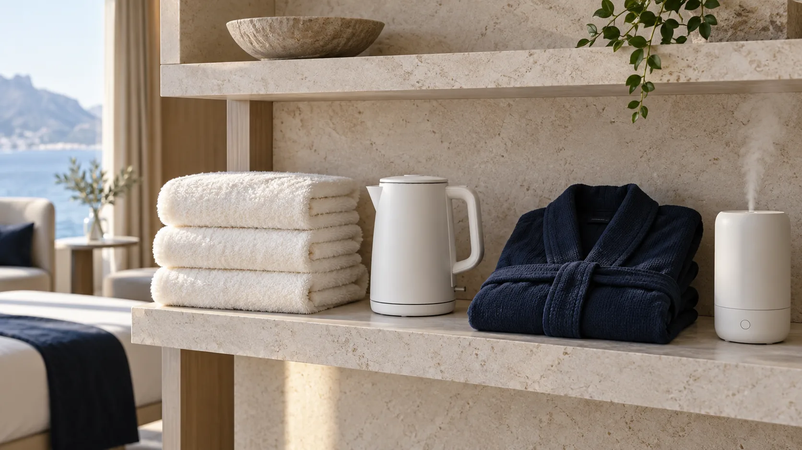

公開記事を読む
関心のあるテーマから、自由に。
気になるテーマを読み、資料を手元に残し、次の選択に活かす。soraは、公開の読みものと会員向けの資料をひとつにつなぐ、架空のナレッジメディアです。

関心のあるテーマから、自由に。
限定記事・資料の導線を確認。
記事の保存や資料閲覧を体験。

記事一覧の「MEMBERS」表示で区別しています。デモでは会員状態を切り替えて画面を確認できます。
されません。個人情報やパスワードを入力せず、状態だけを切り替える体験です。本番ではサーバー側で認証・閲覧制御を実装します。
このデモでは購入できません。本番の初期構成は、指定の外部購入先へ案内する想定です。